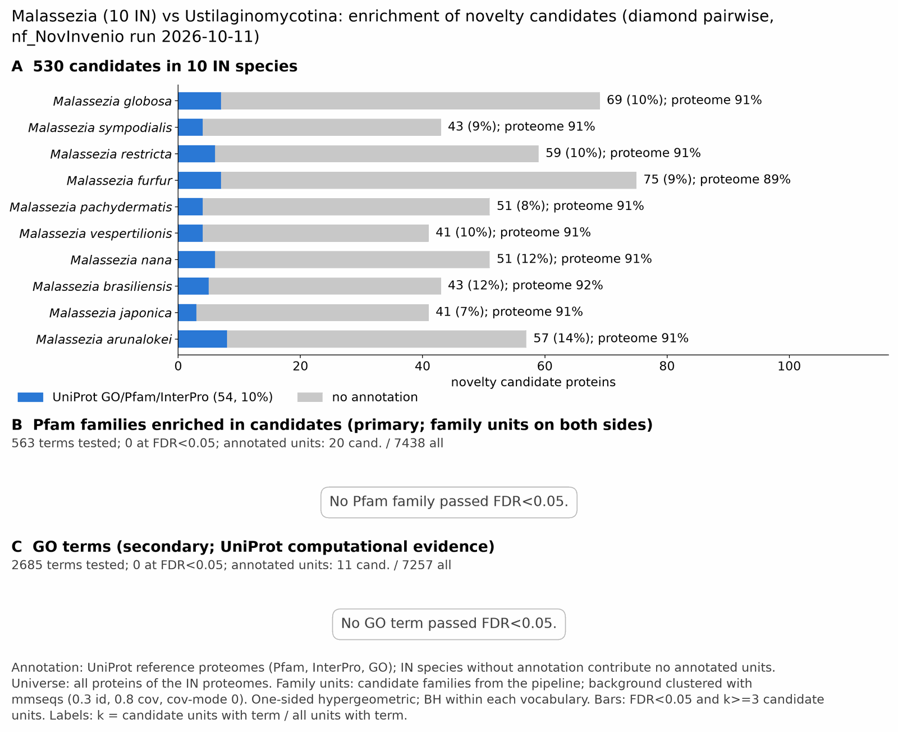

malassezia vs ustilaginomycotina: functional enrichment (novelty)
One-sided hypergeometric test per term; Benjamini-Hochberg FDR within each scope, level and vocabulary. Candidates are the novelty candidates: gene families present in the IN group and absent from the OUT group. Universe: proteome. Background clustered: True (40799 sequences in 9408 clusters, mmseqs easy-cluster --min-seq-id 0.3 -c 0.8). Family level: one unit per candidate family and per background cluster.
Sources: Pfam: 2026-01-27-Pfam38.2; InterPro entries: 110.0; GO: releases/2026-07-26; analysis generated 2026-10-12T18:40:35. Source tables: studies/fungi/malassezia_vs_ustilaginomycotina/analysis/enrichment/outputs/proteome_clustered.
Full record: PROVENANCE. Run report: report.html.
- Annotation provenance is not fully recorded: PROVENANCE.yaml lists the per-species annotation files and their checksums, but not the UniProt release they come from.
- GO results are secondary. GO annotations include computational evidence (IEA, IBA); the GO evidence column shows if a term has non-IEA support.
- Candidate families (pipeline clustering of candidates) and background clusters (mmseqs clustering of the background proteome) are made by different runs, so family-level counts are not fully comparable.
- Low annotation: the candidate set has less than 50% annotation for Pfam 7.0%, InterPro 10.2%, GO 3.4%, any vocabulary 10.2%. Enrichment for these vocabularies has low power.
Summary figure

Annotation coverage
Fraction of proteins with at least one term per vocabulary. Universe = all proteins of the species; candidates = the candidate set.
| Species | Set | Proteins | Pfam | Pfam clan | InterPro | GO | Any |
|---|---|---|---|---|---|---|---|
| Malaglob | universe | 4270 | 83.8% | 67.5% | 90.2% | 82.3% | 90.5% |
| Malaglob | candidates | 69 | 5.8% | 2.9% | 10.1% | 2.9% | 10.1% |
| Malasymp | universe | 4490 | 85.7% | 68.1% | 90.4% | 82.7% | 90.6% |
| Malasymp | candidates | 43 | 7.0% | 4.7% | 9.3% | 4.7% | 9.3% |
| Malarest | universe | 4097 | 86.9% | 69.6% | 91.1% | 84.4% | 91.3% |
| Malarest | candidates | 59 | 6.8% | 5.1% | 10.2% | 3.4% | 10.2% |
| Malafurf | universe | 4532 | 82.7% | 66.1% | 88.4% | 81.2% | 89.0% |
| Malafurf | candidates | 75 | 8.0% | 4.0% | 9.3% | 1.3% | 9.3% |
| Malapach | universe | 4201 | 86.6% | 69.2% | 90.8% | 83.3% | 91.0% |
| Malapach | candidates | 51 | 3.9% | 2.0% | 7.8% | 2.0% | 7.8% |
| Malavesp | universe | 3791 | 86.8% | 70.7% | 91.2% | 84.7% | 91.5% |
| Malavesp | candidates | 41 | 4.9% | 2.4% | 9.8% | 7.3% | 9.8% |
| Malanana | universe | 3953 | 85.7% | 69.3% | 90.7% | 83.6% | 91.1% |
| Malanana | candidates | 51 | 9.8% | 3.9% | 11.8% | 5.9% | 11.8% |
| Malabras | universe | 3911 | 87.1% | 70.9% | 91.4% | 84.5% | 91.8% |
| Malabras | candidates | 43 | 7.0% | 7.0% | 11.6% | 0.0% | 11.6% |
| Malajapo | universe | 4299 | 86.3% | 69.5% | 91.0% | 83.5% | 91.4% |
| Malajapo | candidates | 41 | 4.9% | 0.0% | 7.3% | 2.4% | 7.3% |
| Malaarun | universe | 3785 | 86.3% | 69.9% | 90.9% | 84.1% | 91.2% |
| Malaarun | candidates | 57 | 10.5% | 8.8% | 14.0% | 5.3% | 14.0% |
| ALL_IN | universe | 41329 | 85.7% | 69.0% | 90.6% | 83.4% | 90.9% |
| ALL_IN | candidates | 530 | 7.0% | 4.2% | 10.2% | 3.4% | 10.2% |
Tests summary
Per vocabulary: terms with FDR < 0.05 / terms tested. Protein level counts proteins; family level counts candidate families and background clusters.
| Scope | Level | Cand. units | Pfam sig / tested | Pfam clan sig / tested | InterPro sig / tested | GO sig / tested |
|---|---|---|---|---|---|---|
| whole_set | family | 304 | 0 / 563 | 0 / 263 | 0 / 1302 | 0 / 2685 |
| whole_set | protein | 530 | 7 / 3386 | 2 / 437 | 11 / 7341 | 2 / 5057 |
| Malaarun | family | 57 | 0 / 118 | 0 / 148 | 0 / 377 | 0 / 1576 |
| Malaarun | protein | 57 | 0 / 133 | 0 / 153 | 0 / 425 | 0 / 1602 |
| Malabras | family | 43 | 0 / 126 | 0 / 153 | 0 / 404 | 0 / 0 (skipped_no_annotated_candidates) |
| Malabras | protein | 43 | 0 / 144 | 0 / 159 | 0 / 458 | 0 / 0 (skipped_no_annotated_candidates) |
| Malafurf | family | 75 | 0 / 130 | 0 / 153 | 0 / 399 | 0 / 1678 |
| Malafurf | protein | 75 | 0 / 157 | 0 / 162 | 0 / 468 | 0 / 1722 |
| Malaglob | family | 69 | 0 / 131 | 0 / 144 | 0 / 407 | 0 / 1647 |
| Malaglob | protein | 69 | 0 / 149 | 0 / 151 | 0 / 463 | 0 / 1678 |
| Malajapo | family | 41 | 0 / 135 | 0 / 0 (skipped_no_annotated_candidates) | 0 / 421 | 0 / 1674 |
| Malajapo | protein | 41 | 0 / 162 | 0 / 0 (skipped_no_annotated_candidates) | 0 / 488 | 0 / 1723 |
| Malanana | family | 51 | 0 / 127 | 0 / 144 | 0 / 404 | 0 / 1618 |
| Malanana | protein | 51 | 0 / 142 | 0 / 154 | 0 / 462 | 0 / 1655 |
| Malapach | family | 51 | 0 / 134 | 0 / 156 | 0 / 415 | 0 / 1663 |
| Malapach | protein | 51 | 0 / 153 | 0 / 163 | 0 / 470 | 0 / 1700 |
| Malarest | family | 59 | 0 / 129 | 0 / 151 | 0 / 407 | 0 / 1643 |
| Malarest | protein | 59 | 0 / 146 | 0 / 157 | 0 / 454 | 0 / 1679 |
| Malasymp | family | 43 | 0 / 134 | 0 / 155 | 0 / 410 | 0 / 1681 |
| Malasymp | protein | 43 | 0 / 159 | 0 / 165 | 0 / 488 | 0 / 1731 |
| Malavesp | family | 40 | 0 / 122 | 0 / 148 | 0 / 403 | 0 / 1610 |
| Malavesp | protein | 41 | 0 / 141 | 0 / 156 | 0 / 446 | 0 / 1644 |
Top 25 Pfam terms (whole set, family level)
25 rows shown, ordered by FDR then p-value; 0 have FDR < 0.05 (bold).
| Term | Name | k / N cand. | n / M bg | Fold | FDR (BH) |
|---|---|---|---|---|---|
| PF00385 | Chromo: Chromo (CHRromatin Organisation MOdifier) domain | 2 / 20 | 9 / 7438 | 82.644 | 0.138 |
| PF05047 | L51_S25_CI-B8: Mitochondrial ribosomal protein L51 / S25 / CI-B8 domain | 1 / 20 | 5 / 7438 | 74.38 | 1.000 |
| PF13041 | PPR_2: PPR repeat family | 1 / 20 | 5 / 7438 | 74.38 | 1.000 |
| PF01535 | PPR: PPR repeat | 1 / 20 | 10 / 7438 | 37.19 | 1.000 |
| PF12937 | F-box-like: F-box-like | 1 / 20 | 14 / 7438 | 26.564 | 1.000 |
| PF00004 | AAA: ATPase family associated with various cellular activities (AAA) | 0 / 20 | 47 / 7438 | 0.0 | 1.000 |
| PF00005 | ABC_tran: ABC transporter | 0 / 20 | 38 / 7438 | 0.0 | 1.000 |
| PF00006 | ATP-synt_ab: ATP synthase alpha/beta family, nucleotide-binding domain | 0 / 20 | 5 / 7438 | 0.0 | 1.000 |
| PF00009 | GTP_EFTU: Elongation factor Tu GTP binding domain | 0 / 20 | 17 / 7438 | 0.0 | 1.000 |
| PF00010 | HLH: Helix-loop-helix DNA-binding domain | 0 / 20 | 20 / 7438 | 0.0 | 1.000 |
| PF00012 | HSP70: Hsp70 protein | 0 / 20 | 10 / 7438 | 0.0 | 1.000 |
| PF00018 | SH3_1: SH3 domain | 0 / 20 | 29 / 7438 | 0.0 | 1.000 |
| PF00022 | Actin: Actin | 0 / 20 | 14 / 7438 | 0.0 | 1.000 |
| PF00023 | Ank: Ankyrin repeat | 0 / 20 | 11 / 7438 | 0.0 | 1.000 |
| PF00025 | Arf: ADP-ribosylation factor family | 0 / 20 | 12 / 7438 | 0.0 | 1.000 |
| PF00026 | Asp: Eukaryotic aspartyl protease | 0 / 20 | 20 / 7438 | 0.0 | 1.000 |
| PF00027 | cNMP_binding: Cyclic nucleotide-binding domain | 0 / 20 | 7 / 7438 | 0.0 | 1.000 |
| PF00043 | GST_C: Glutathione S-transferase, C-terminal domain | 0 / 20 | 7 / 7438 | 0.0 | 1.000 |
| PF00063 | Myosin_head: Myosin head (motor domain) | 0 / 20 | 7 / 7438 | 0.0 | 1.000 |
| PF00067 | p450: Cytochrome P450 | 0 / 20 | 13 / 7438 | 0.0 | 1.000 |
| PF00069 | Pkinase: Protein kinase domain | 0 / 20 | 174 / 7438 | 0.0 | 1.000 |
| PF00071 | Ras: Ras family | 0 / 20 | 21 / 7438 | 0.0 | 1.000 |
| PF00072 | Response_reg: Response regulator receiver domain | 0 / 20 | 5 / 7438 | 0.0 | 1.000 |
| PF00076 | RRM_1: RNA recognition motif | 0 / 20 | 112 / 7438 | 0.0 | 1.000 |
| PF00078 | RVT_1: Reverse transcriptase (RNA-dependent DNA polymerase) | 0 / 20 | 5 / 7438 | 0.0 | 1.000 |
Top 25 InterPro terms (whole set, family level)
25 rows shown, ordered by FDR then p-value; 0 have FDR < 0.05 (bold).
| Term | Name | k / N cand. | n / M bg | Fold | FDR (BH) |
|---|---|---|---|---|---|
| IPR023780 | Domain:Chromo domain | 2 / 33 | 9 / 8011 | 53.946 | 0.472 |
| IPR000953 | Domain:Chromo/chromo shadow domain | 2 / 33 | 10 / 8011 | 48.552 | 0.472 |
| IPR036872 | Homologous_superfamily:CH domain superfamily | 2 / 33 | 14 / 8011 | 34.68 | 0.620 |
| IPR016197 | Homologous_superfamily:Chromo-like domain superfamily | 2 / 33 | 16 / 8011 | 30.345 | 0.620 |
| IPR007741 | Domain:Ribosomal protein/NADH dehydrogenase domain | 1 / 33 | 5 / 8011 | 48.552 | 1.000 |
| IPR016098 | Homologous_superfamily:Cyclase-associated protein CAP/septum formation inhibitor MinC, C-terminal | 1 / 33 | 6 / 8011 | 40.46 | 1.000 |
| IPR000261 | Domain:EH domain | 1 / 33 | 7 / 8011 | 34.68 | 1.000 |
| IPR023213 | Homologous_superfamily:Chloramphenicol acetyltransferase-like domain superfamily | 1 / 33 | 9 / 8011 | 26.973 | 1.000 |
| IPR001810 | Domain:F-box domain | 1 / 33 | 15 / 8011 | 16.184 | 1.000 |
| IPR036047 | Homologous_superfamily:F-box-like domain superfamily | 1 / 33 | 17 / 8011 | 14.28 | 1.000 |
| IPR002885 | Repeat:Pentatricopeptide repeat | 1 / 33 | 18 / 8011 | 13.487 | 1.000 |
| IPR011990 | Homologous_superfamily:Tetratricopeptide-like helical domain superfamily | 2 / 33 | 168 / 8011 | 2.89 | 1.000 |
| IPR032675 | Homologous_superfamily:Leucine-rich repeat domain superfamily | 1 / 33 | 44 / 8011 | 5.517 | 1.000 |
| IPR036322 | Homologous_superfamily:WD40-repeat-containing domain superfamily | 2 / 33 | 220 / 8011 | 2.207 | 1.000 |
| IPR019734 | Repeat:Tetratricopeptide repeat | 1 / 33 | 65 / 8011 | 3.735 | 1.000 |
| IPR015943 | Homologous_superfamily:WD40/YVTN repeat-like-containing domain superfamily | 2 / 33 | 244 / 8011 | 1.99 | 1.000 |
| IPR036249 | Homologous_superfamily:Thioredoxin-like superfamily | 1 / 33 | 77 / 8011 | 3.153 | 1.000 |
| IPR036259 | Homologous_superfamily:MFS transporter superfamily | 1 / 33 | 116 / 8011 | 2.093 | 1.000 |
| IPR000008 | Domain:C2 domain | 0 / 33 | 21 / 8011 | 0.0 | 1.000 |
| IPR000014 | Domain:PAS domain | 0 / 33 | 5 / 8011 | 0.0 | 1.000 |
| IPR000073 | Domain:Alpha/beta hydrolase fold-1 | 0 / 33 | 22 / 8011 | 0.0 | 1.000 |
| IPR000086 | Domain:NUDIX hydrolase domain | 0 / 33 | 19 / 8011 | 0.0 | 1.000 |
| IPR000089 | Domain:Biotin/lipoyl attachment | 0 / 33 | 9 / 8011 | 0.0 | 1.000 |
| IPR000092 | Family:Polyprenyl synthetase-like | 0 / 33 | 5 / 8011 | 0.0 | 1.000 |
| IPR000156 | Domain:Ran binding domain | 0 / 33 | 8 / 8011 | 0.0 | 1.000 |
Top 15 GO terms (whole set, family level) — secondary, computational evidence (IEA/IBA) included
15 rows shown, ordered by FDR then p-value; 0 have FDR < 0.05 (bold).
| Term | Name | k / N cand. | n / M bg | Fold | FDR (BH) | GO evidence | Families with non-IEA |
|---|---|---|---|---|---|---|---|
| GO:0006338 | biological_process:chromatin remodeling | 2 / 11 | 79 / 7257 | 16.702 | 1.000 | IEA_only | 0 |
| GO:1990071 | cellular_component:TRAPPII protein complex | 1 / 11 | 5 / 7257 | 131.945 | 1.000 | IEA_only | 0 |
| GO:0006297 | biological_process:nucleotide-excision repair, DNA gap filling | 1 / 11 | 7 / 7257 | 94.247 | 1.000 | IEA_only | 0 |
| GO:0006325 | biological_process:chromatin organization | 2 / 11 | 106 / 7257 | 12.448 | 1.000 | IEA_only | 0 |
| GO:0000731 | biological_process:DNA synthesis involved in DNA repair | 1 / 11 | 10 / 7257 | 65.973 | 1.000 | IEA_only | 0 |
| GO:0016255 | biological_process:attachment of GPI anchor to protein | 1 / 11 | 10 / 7257 | 65.973 | 1.000 | IEA_only | 0 |
| GO:0043625 | cellular_component:delta DNA polymerase complex | 1 / 11 | 10 / 7257 | 65.973 | 1.000 | IEA_only | 0 |
| GO:0032502 | biological_process:developmental process | 1 / 11 | 11 / 7257 | 59.975 | 1.000 | IEA_only | 0 |
| GO:0008303 | cellular_component:caspase complex | 1 / 11 | 12 / 7257 | 54.977 | 1.000 | IEA_only | 0 |
| GO:0042765 | cellular_component:GPI-anchor transamidase complex | 1 / 11 | 12 / 7257 | 54.977 | 1.000 | IEA_only | 0 |
| GO:0140535 | cellular_component:intracellular protein-containing complex | 3 / 11 | 408 / 7257 | 4.851 | 1.000 | IEA_only | 0 |
| GO:1990234 | cellular_component:transferase complex | 3 / 11 | 430 / 7257 | 4.603 | 1.000 | IEA_only | 0 |
| GO:0043189 | cellular_component:H4/H2A histone acetyltransferase complex | 1 / 11 | 19 / 7257 | 34.722 | 1.000 | IEA_only | 0 |
| GO:1902562 | cellular_component:H4 histone acetyltransferase complex | 1 / 11 | 19 / 7257 | 34.722 | 1.000 | IEA_only | 0 |
| GO:0030008 | cellular_component:TRAPP complex | 1 / 11 | 20 / 7257 | 32.986 | 1.000 | IEA_only | 0 |
Actin cytoskeleton controls
Known actin-related families and how many of their proteins pass each filter. Protein ID columns are left out.
| control | pfam_ids | desc_regex | IN_universe | IN_in_matrix | IN_pass_ingroup_rule | candidates | near_miss_out1 | near_miss_out2 | n_Malaglob | n_Malasymp | n_Malarest | n_Malafurf | n_Malapach | n_Malavesp | n_Malanana | n_Malabras | n_Malajapo | n_Malaarun | n_Mycomayd | n_Ustihord | n_Sporreil | n_Moesaphi | n_Kalmbras | n_Pseufloc | n_Sporgram | n_Testcype | n_Tillindi | n_Tillcari | n_Meirmilt | n_Acaringo | n_Jamirose | n_Micrgluc | n_Tillwash | n_Cerabomb | n_Violpalu | n_Tillanom |
|---|---|---|---|---|---|---|---|---|---|---|---|---|---|---|---|---|---|---|---|---|---|---|---|---|---|---|---|---|---|---|---|---|---|---|---|---|
| Arp2/3 ARPC2 (P34-Arc) | PF04045 | 10 | 10 | 10 | 0 | 0 | 0 | 1 | 1 | 1 | 1 | 1 | 1 | 1 | 1 | 1 | 1 | 1 | 1 | 1 | 1 | 1 | 1 | 1 | 1 | 1 | 1 | 1 | 1 | 1 | 1 | 1 | 1 | 1 | 1 | |
| Arp2/3 ARPC3 (P21-Arc) | PF04062 | 10 | 10 | 10 | 0 | 0 | 0 | 1 | 1 | 1 | 1 | 1 | 1 | 1 | 1 | 1 | 1 | 1 | 1 | 1 | 1 | 1 | 1 | 1 | 1 | 1 | 1 | 1 | 1 | 1 | 1 | 1 | 1 | 1 | 1 | |
| Arp2/3 ARPC4 | PF05856 | 9 | 9 | 9 | 0 | 0 | 0 | 0 | 1 | 1 | 1 | 1 | 1 | 1 | 1 | 1 | 1 | 1 | 0 | 1 | 0 | 1 | 1 | 1 | 1 | 1 | 1 | 1 | 1 | 1 | 1 | 1 | 1 | 1 | 1 | |
| Arp2/3 ARPC5 (P16-Arc) | PF04699 | 10 | 10 | 10 | 0 | 0 | 0 | 1 | 1 | 1 | 1 | 1 | 1 | 1 | 1 | 1 | 1 | 1 | 1 | 1 | 1 | 1 | 1 | 1 | 1 | 1 | 1 | 1 | 1 | 1 | 1 | 1 | 1 | 1 | 1 | |
| Arp2/3 ARPC1 (description only) | arp2/3 complex.*(41|p41|subunit 1)|ARPC1 | 10 | 10 | 10 | 0 | 0 | 0 | 1 | 1 | 1 | 1 | 1 | 1 | 1 | 1 | 1 | 1 | 1 | 1 | 1 | 1 | 1 | 1 | 1 | 1 | 1 | 1 | 1 | 1 | 1 | 1 | 1 | 1 | 1 | 1 | |
| Arp2 / Arp3 (description only) | actin-related protein (2|3)\b|\bARP[23]\b | 66 | 66 | 66 | 0 | 0 | 0 | 6 | 8 | 7 | 7 | 6 | 4 | 7 | 7 | 7 | 7 | 7 | 5 | 6 | 6 | 6 | 6 | 7 | 5 | 7 | 7 | 6 | 6 | 6 | 6 | 6 | 6 | 6 | 6 | |
| WAVE complex NCKAP1 | PF09735 | 0 | 0 | 0 | 0 | 0 | 0 | 0 | 0 | 0 | 0 | 0 | 0 | 0 | 0 | 0 | 0 | 0 | 0 | 0 | 0 | 0 | 0 | 0 | 0 | 0 | 0 | 0 | 0 | 0 | 0 | 0 | 0 | 0 | 0 | |
| WAVE complex CYFIP (FragX_IP) | PF05994 | 0 | 0 | 0 | 0 | 0 | 0 | 0 | 0 | 0 | 0 | 0 | 0 | 0 | 0 | 0 | 0 | 0 | 0 | 0 | 0 | 0 | 0 | 0 | 0 | 0 | 0 | 0 | 0 | 0 | 0 | 0 | 0 | 0 | 0 | |
| WAVE complex ABI | PF07815|PF27594 | 0 | 0 | 0 | 0 | 0 | 0 | 0 | 0 | 0 | 0 | 0 | 0 | 0 | 0 | 0 | 0 | 0 | 0 | 0 | 0 | 0 | 0 | 0 | 0 | 0 | 0 | 0 | 0 | 0 | 0 | 0 | 0 | 0 | 0 | |
| SCAR/WAVE (SCAR_helical) | PF27569 | 0 | 0 | 0 | 0 | 0 | 0 | 0 | 0 | 0 | 0 | 0 | 0 | 0 | 0 | 0 | 0 | 0 | 0 | 0 | 0 | 0 | 0 | 0 | 0 | 0 | 0 | 0 | 0 | 0 | 0 | 0 | 0 | 0 | 0 | |
| WASP family (WH1) | PF00568 | 9 | 9 | 9 | 0 | 0 | 0 | 1 | 1 | 0 | 1 | 1 | 1 | 1 | 1 | 1 | 1 | 1 | 1 | 1 | 0 | 1 | 1 | 1 | 1 | 1 | 1 | 1 | 1 | 1 | 1 | 1 | 1 | 1 | 1 | |
| WH2 motif (WASP, WAVE, others) | PF02205 | 16 | 16 | 12 | 0 | 0 | 0 | 1 | 2 | 1 | 3 | 2 | 1 | 1 | 2 | 2 | 1 | 2 | 2 | 2 | 1 | 1 | 2 | 2 | 2 | 1 | 1 | 1 | 2 | 3 | 2 | 1 | 2 | 2 | 1 | |
| Formin FH2 | PF02181 | 10 | 10 | 10 | 0 | 0 | 0 | 1 | 1 | 1 | 1 | 1 | 1 | 1 | 1 | 1 | 1 | 2 | 2 | 2 | 2 | 2 | 2 | 2 | 2 | 2 | 2 | 2 | 2 | 2 | 2 | 2 | 2 | 2 | 2 | |
| Formin Drf_GBD / Drf_FH3 / Drf_DAD | PF06371|PF06367|PF06345 | 16 | 16 | 16 | 0 | 0 | 0 | 2 | 2 | 2 | 1 | 2 | 1 | 2 | 1 | 2 | 1 | 2 | 2 | 2 | 2 | 2 | 2 | 2 | 2 | 2 | 2 | 2 | 2 | 2 | 2 | 3 | 2 | 2 | 2 | |
| Ena/VASP (VASP_tetra) | PF08776 | 0 | 0 | 0 | 0 | 0 | 0 | 0 | 0 | 0 | 0 | 0 | 0 | 0 | 0 | 0 | 0 | 0 | 0 | 0 | 0 | 0 | 0 | 0 | 0 | 0 | 0 | 0 | 0 | 0 | 0 | 0 | 0 | 0 | 0 | |
| Coronin (description only) | coronin | 10 | 10 | 10 | 0 | 0 | 0 | 1 | 1 | 1 | 1 | 1 | 1 | 1 | 1 | 1 | 1 | 1 | 1 | 1 | 1 | 1 | 2 | 1 | 1 | 2 | 2 | 2 | 2 | 1 | 1 | 1 | 2 | 1 | 2 | |
| Cortactin (HS1_rep) | PF02218 | 0 | 0 | 0 | 0 | 0 | 0 | 0 | 0 | 0 | 0 | 0 | 0 | 0 | 0 | 0 | 0 | 0 | 0 | 0 | 0 | 0 | 0 | 0 | 0 | 0 | 0 | 0 | 0 | 0 | 0 | 0 | 0 | 0 | 0 | |
| Myosin 2 tail (Myosin_tail_1) | PF01576 | 0 | 0 | 0 | 0 | 0 | 0 | 0 | 0 | 0 | 0 | 0 | 0 | 0 | 0 | 0 | 0 | 0 | 0 | 0 | 0 | 0 | 0 | 0 | 0 | 0 | 0 | 0 | 1 | 0 | 0 | 0 | 1 | 0 | 0 | |
| Myosin head (all myosins) | PF00063 | 49 | 49 | 49 | 0 | 0 | 0 | 5 | 5 | 5 | 5 | 5 | 5 | 5 | 4 | 5 | 5 | 4 | 4 | 4 | 3 | 4 | 5 | 4 | 4 | 5 | 5 | 4 | 4 | 5 | 5 | 5 | 5 | 5 | 5 |
Page written by bin/generate_enrichment_page.py.